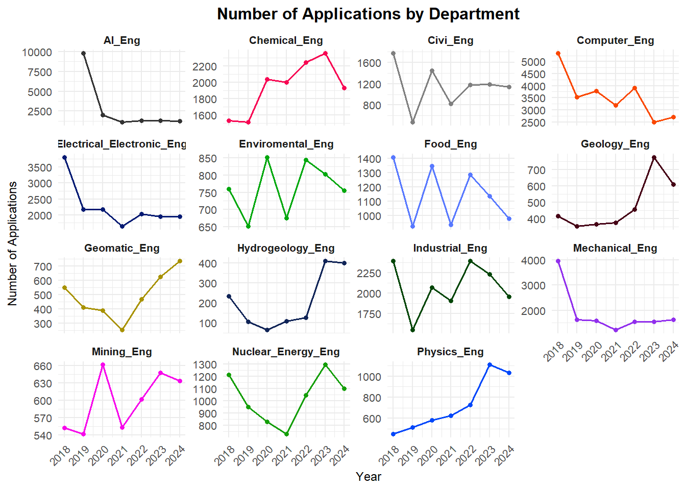
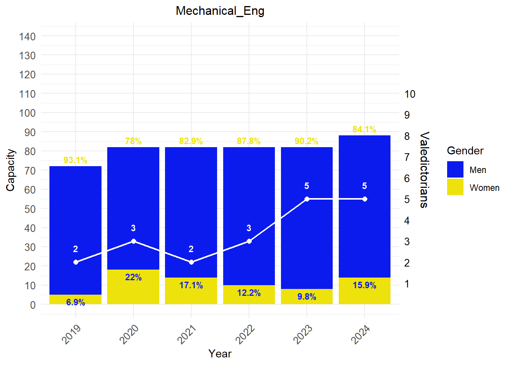
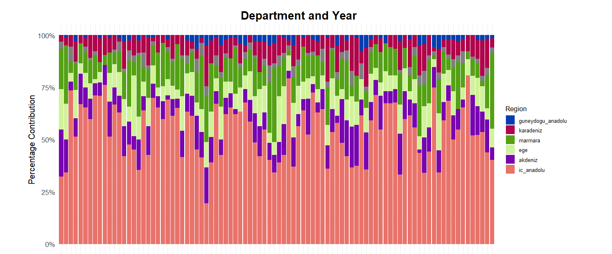

The graph illustrates the annual ranking changes for various engineering departments using an inverted base-3 logarithmic scale on the y-axis. This allows for better visualization of differences in rankings, especially when the values span a large range.
Key Observations
1. Ranking Scale and Inverted Axis
The y-axis represents the rankings in an inverted order, meaning lower values (e.g., 900) are at the top, representing better rankings, while higher values (e.g., 218,700) are at the bottom.
The logarithmic scale (base 3) compresses large ranking ranges, making differences at higher ranks more visible.
2. Trends Across Departments
Departments such as Computer_Eng, Electrical_Electronic_Eng, and Mechanical_Eng consistently maintain strong rankings (closer to the top).
Some departments, such as Geology_Eng and Hydrogeology_Eng, exhibit more volatile or declining trends, with rankings fluctuating significantly across years.
3. Departments with Notable Improvements
AI_Eng: Shows consistent improvement over the years, likely reflecting the growing demand for AI-related skills.
Environmental_Eng: Gradual improvement in rankings, potentially tied to increased focus on sustainability and environmental concerns.
4. Departments with Declining or Stable Trends
Mining_Eng and Nuclear_Energy_Eng show a downward trend or stagnation, possibly due to reduced student interest or demand in these fields.
Geomatic_Eng: Rankings remain stable, with minor fluctuations year to year.
Points to Highlight
High-Performing Departments:
Computer_Eng and Electrical_Electronic_Eng dominate in rankings, consistently outperforming other departments. This could be tied to their relevance in high-demand industries such as technology and electronics.
Emerging Trends:
Fields like AI_Eng and Environmental_Eng show positive momentum, reflecting their growing importance in modern industries.
Fields Facing Challenges:
Traditional disciplines like Mining_Eng and Hydrogeology_Eng appear to struggle with maintaining their rankings, which may signal declining interest or resource constraints.
Impact of Logarithmic Scale:
The base-3 logarithmic transformation helps visualize smaller differences in rankings at lower ranks while compressing larger differences at higher ranks.
Insights and Recommendations
Improving Low-Performing Departments:
Strategies could be developed to enhance the appeal and competitiveness of fields like Mining_Eng and Nuclear_Energy_Eng, possibly through curriculum updates or emphasizing interdisciplinary applications.
Sustaining High Performers:
Departments like Computer_Eng and Electrical_Electronic_Eng should continue leveraging their strong market relevance to attract top talent and improve further.
Monitoring Trends:
Rising fields like AI_Eng and Environmental_Eng should be closely monitored for potential resource allocation and strategic focus to capitalize on their upward trends.
library(ggplot2)library(scales)library(readr)library(dplyr)# Load the datasetdata <-read_csv("ya_veri.csv")# Plot with separate facets for each department and custom colorsggplot(data=data, aes(x=year, y=number_of_applications, group=department, color=department)) +geom_line(linewidth=0.6) +# Custom colored linesgeom_point(size=1.2) +# Custom colored pointsfacet_wrap(~department, scales="free_y") +# Create separate plots for each departmentscale_color_manual(values =c("Chemical_Eng"="#f70753", "Mining_Eng"="#f707eb", "Geology_Eng"="#450015", "Geomatic_Eng"="#a89200", "Enviromental_Eng"="#00a80e", "Industrial_Eng"="#004506", "AI_Eng"="#333333", "Hydrogeology_Eng"="#102457", "Physics_Eng"="#0047fa", "Computer_Eng"="#fa4700", "Mechanical_Eng"="#912fed", "Electrical_Electronic_Eng"="#031a73", "Food_Eng"="#5778ff", "Civil_Eng"="#ff57e9", "Nuclear_Energy_Eng"="#149e08","Other"="#c2501b"# Default color for additional departments ) ) +labs(title="Number of Applications by Department",x="Year",y="Number of Applications" ) +theme_minimal(base_size =10) +# Compact layouttheme(strip.text=element_text(size=8, face="bold"), # Bold department labelsaxis.text.x=element_text(size=8, angle=45, hjust=1), # Smaller x-axis labelsaxis.text.y=element_text(size=8), # Smaller y-axis labelsaxis.title=element_text(size=9), # Smaller axis titlesplot.title=element_text(size=12, face="bold", hjust=0.5), # Compact titleplot.margin =margin(5, 5, 5, 5), # Reduce plot marginslegend.position="none"# Remove legend for better facet display ) +scale_x_continuous(breaks =unique(data$year)) # Ensure all years are shown

1. General Information About the Chart
The chart shows trends in the number of applications to departments over the years.
It shows departments with the highest and lowest application trends.
Significant changes in application patterns over specific years.
The use of a logarithmic scale makes it easier to compare departments with vastly different application numbers.
2. Key Observations
a. Most Popular Departments
The lines with steep slopes or higher starting points indicate departments with more applications.
For instance, Computer Engineering, Electrical-Electronic Engineering, and Mechanical Engineering stand out with significantly higher application numbers compared to other departments.
b. Departments with Low Applications
Departments like Mining Engineering, Hydrogeology Engineering, and Environmental Engineering seem to have consistently low application numbers.
3. Importance of Logarithmic Scale
Why use a logarithmic scale?
A base-2 logarithmic scale ensures trends in departments with vastly different application numbers are comparable and visible.
3. Key Points Highlighted in the Analysis
a. High-Interest Departments
The chart emphasizes the sustained popularity of Computer Engineering, Electrical-Electronic Engineering, and Mechanical Engineering. These fields align closely with current and emerging industry demands, explaining their high application numbers.
b. Turning Points in Trends
Specific years, such as the post-2020 period, mark significant increases in applications for technology-related departments. This pattern reflects the broader societal shift toward digitalization and the increased demand for skills in these areas.
Conclusion
This analysis provides a comprehensive overview of department application trends over the years. It identifies popular fields, highlights underrepresented ones, and explains the factors driving these patterns. The use of a well-structured visualization ensures that these insights are communicated effectively and clearly.
Code
# Gerekli kütüphaneleri yüklelibrary(ggplot2)library(readr)library(dplyr)# Veriyi yükledata <-read_csv("ya_veri.csv")# 2018 yılını filtreledata <-filter(data, year !=2018)# En yüksek kadın ve erkek oranlarına sahip mühendislik bölümlerini bultop_women_department <- data %>%group_by(department) %>%summarise(avg_women =mean(percentage_women, na.rm =TRUE)) %>%arrange(desc(avg_women)) %>%slice(1) %>%pull(department)top_men_department <- data %>%group_by(department) %>%summarise(avg_men =mean(percentage_men, na.rm =TRUE)) %>%arrange(desc(avg_men)) %>%slice(1) %>%pull(department)# İlgili bölümler için grafik çizme fonksiyonuplot_gender_distribution <-function(department_name, valedictorian_color ="purple", axis_color ="black") { department_data <-filter(data, department == department_name)# Y ekseni sınırlarını belirle y_limits <-c(0, 140)ggplot(department_data) +geom_bar(aes(x =factor(year), y = capacity, fill ="Men"), stat ="identity", position ="stack") +geom_bar(aes(x =factor(year), y = capacity * (percentage_women /100), fill ="Women"), stat ="identity", position ="stack") +geom_line(aes(x =factor(year), y = valedictorian *11, group =1), color = valedictorian_color, linewidth =0.75) +geom_point(aes(x =factor(year), y = valedictorian *11), color = valedictorian_color, size =2) +geom_text(aes(x =factor(year), y = capacity, label =paste0(percentage_men, "%")), vjust =-0.5, color ="#ede20c", size =3, fontface ="bold") +geom_text(aes(x =factor(year), y = capacity * (percentage_women /100), label =paste0(percentage_women, "%")), vjust =1.5, color ="#0c1bed", size =3, fontface ="bold") +geom_text(aes(x =factor(year), y = valedictorian *11, label = valedictorian), color = valedictorian_color, size =3, fontface ="bold", vjust =-1.5, hjust =0.5) +scale_y_continuous(name ="Capacity", limits = y_limits, breaks =seq(y_limits[1], y_limits[2], by =10),sec.axis =sec_axis(~ . /11, name ="Valedictorians", breaks =seq(1, 10, by =1))) +labs(title = department_name, x ="Year", fill ="Gender") +scale_fill_manual(values =c("Women"="#ede20c", "Men"="#0c1bed")) +theme_minimal() +theme(plot.title =element_text(hjust =0.5, size =12),axis.text.x =element_text(angle =45, hjust =1, size =10),axis.text.y =element_text(size =10),axis.text.y.right =element_text(color = axis_color, size =10),axis.title.y.right =element_text(color = axis_color, size =12))}# Makine Mühendisliği için grafik (beyaz çizgi ve sayı)print(plot_gender_distribution("Mechanical_Eng", valedictorian_color ="white", axis_color ="black"))

Code
# Gıda Mühendisliği için grafik (siyah çizgi, sayı ve eksen)print(plot_gender_distribution("Food_Eng", valedictorian_color ="black", axis_color ="black"))
Code
# Gerekli kütüphaneleri yüklelibrary(ggplot2)library(tidyr)library(dplyr)library(readr)# Veriyi yükledata_csv <-read_csv("ya_veri.csv")# 6 yıllık kadın ve erkek oranlarının ortalamasını hesapladata_avg <- data_csv %>%filter(!is.na(percentage_women), !is.na(percentage_men)) %>%# Eksik değerleri filtrelegroup_by(department) %>%summarise(Women =mean(percentage_women, na.rm =TRUE),Men =mean(percentage_men, na.rm =TRUE) ) %>%arrange(desc(Women)) # Kadın oranlarına göre sıralama# Veriyi uzun formata dönüştürdata_long <- data_avg %>%pivot_longer(cols =c(Women, Men), names_to ="Gender", values_to ="Percentage")# Etiket pozisyonlarını hesapladata_long <- data_long %>%group_by(department) %>%mutate(LabelPosition =ifelse(Gender =="Women", 10, 90), # Kadın oranı alt kısma, erkek oranı üst kısmaLabelColor =ifelse(Gender =="Women", "black", "white") # Kadın için siyah, erkek için beyaz )# Bar grafiği oluşturggplot(data_long, aes(x =reorder(department, -Percentage), y = Percentage, fill = Gender)) +geom_bar(stat ="identity", width =0.95) +# Bar genişliği ayarlandıgeom_text(aes(label =sprintf("%.2f", Percentage), y = LabelPosition, color = LabelColor),angle =90, size =3, fontface ="bold", hjust =0.5) +# Etiketler dikeyscale_fill_manual(values =c("Women"="#ede20c", "Men"="#0c1bed")) +scale_color_identity() +# Önceden belirlenen renkler kullanılıyorlabs(title ="Gender Distribution in Engineering Disciplines",x ="Engineering Disciplines",y ="Percentage",fill ="Gender" ) +theme_minimal() +theme(axis.text.x =element_text(angle =45, hjust =1, size =8, face ="bold"), # X ekseni yazılarıplot.title =element_text(face ="bold", hjust =0.5) # Başlık ortalanmış ve kalın )
Code
library(knitr)include_graphics("a.png")

Code
# Load necessary librarieslibrary(tidyr)library(dplyr)library(ggplot2)library(forcats)library(readr)library(stringr) # For str_wrap()# Load the datasetdata <-read_csv("ya_veri.csv")# Exclude 2018 and reshape the datadata_tidy <- data %>%filter(year !=2018) %>%select(department, year, akdeniz, dogu_anadolu, ege, guneydogu_anadolu, ic_anadolu, karadeniz, marmara) %>%pivot_longer(cols =c(akdeniz, dogu_anadolu, ege, guneydogu_anadolu, ic_anadolu, karadeniz, marmara),names_to ="region",values_to ="percentage_contribution" ) %>%mutate(region =fct_relevel(region, "ic_anadolu", "marmara", "guneydogu_anadolu", "doğu_anadolu", "akdeniz", "ege", "karadeniz")) %>%filter(!is.na(percentage_contribution)) %>%group_by(department, year) %>%mutate(region =fct_reorder(region, -percentage_contribution, .desc =TRUE)) %>%ungroup()# Define the color palette, including all regionsregion_colors <-c("ic_anadolu"="#e8736b","marmara"="#54a115","guneydogu_anadolu"="#053eb0","doğu_anadolu"="#ff9900","akdeniz"="#7705b0","karadeniz"="#b0054a","ege"="#d1f299")# Plot: Department Breakdown by Yearggplot(data=data_tidy, aes(x=interaction(department, year), y=percentage_contribution, fill=region)) +geom_bar(stat="identity", position="fill") +labs(title="Department and Year",x="Department and Year (Alphabetical Order)",y="Percentage Contribution",fill="Region" ) +scale_y_continuous(labels = scales::percent_format()) +scale_fill_manual(values = region_colors) +theme_minimal(base_size =10) +theme(axis.text.x =element_blank(), # Remove x-axis labels for less clutteraxis.ticks.x =element_blank(),axis.text.y =element_text(size =10),axis.title =element_text(size =12),plot.title =element_text(size =16, face ="bold", hjust =0.5, lineheight =1.2), # Two-line titleplot.title.position ="plot",legend.title =element_text(size =10), # Smaller legend titlelegend.text =element_text(size =8), # Smaller legend textlegend.key.size =unit(0.5, "cm"), # Smaller legend boxeslegend.spacing.y =unit(0.2, "cm"), # Reduce vertical spacing between legend itemsplot.margin =margin(40, 60, 40, 40) # Add right margin for wider plot )